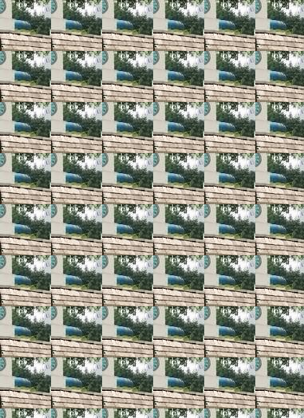
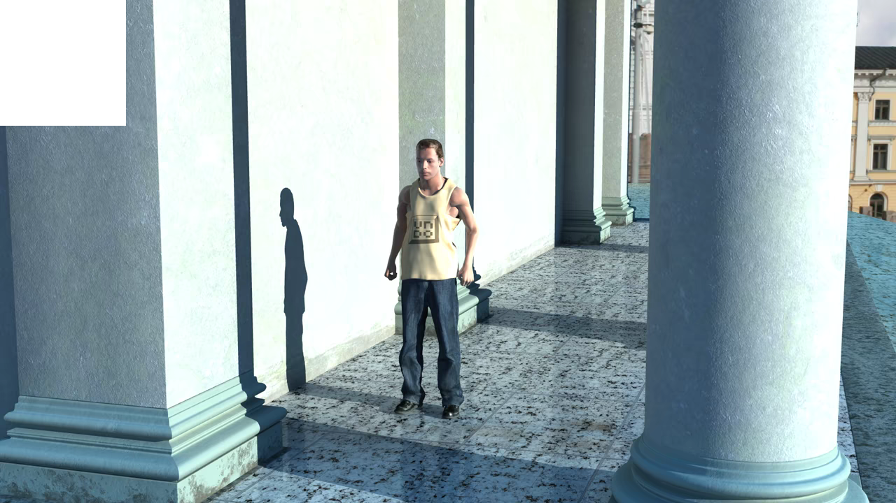
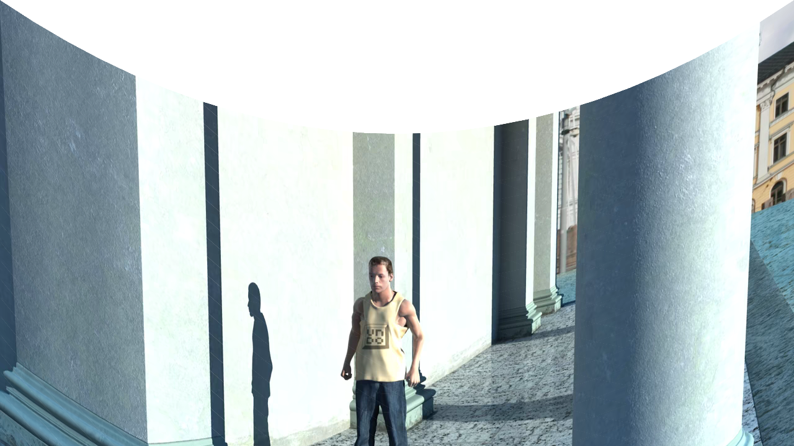
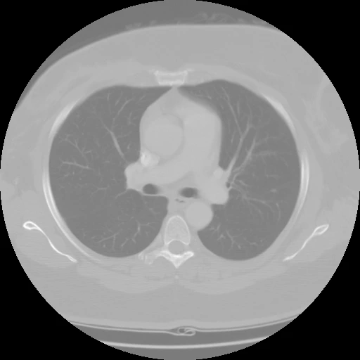
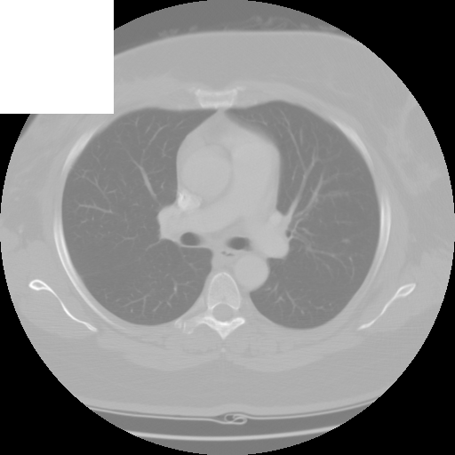
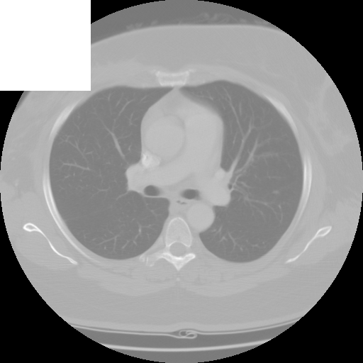
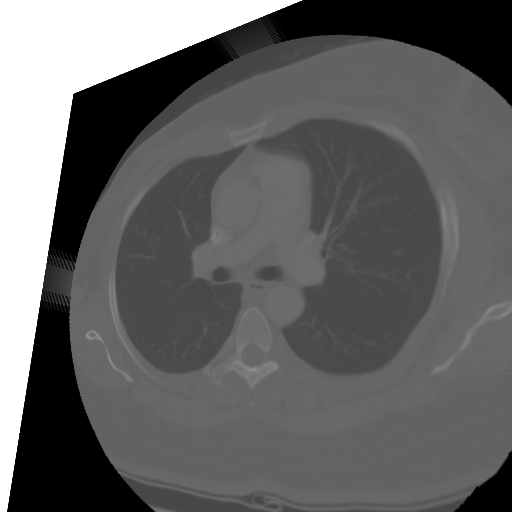
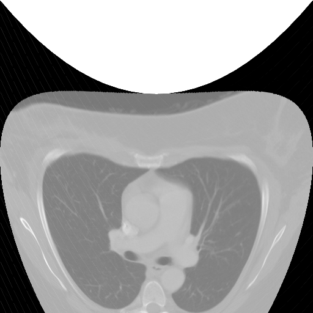
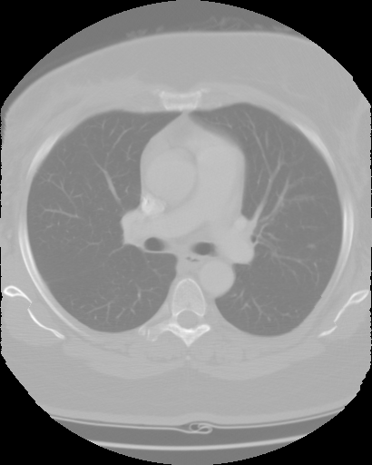
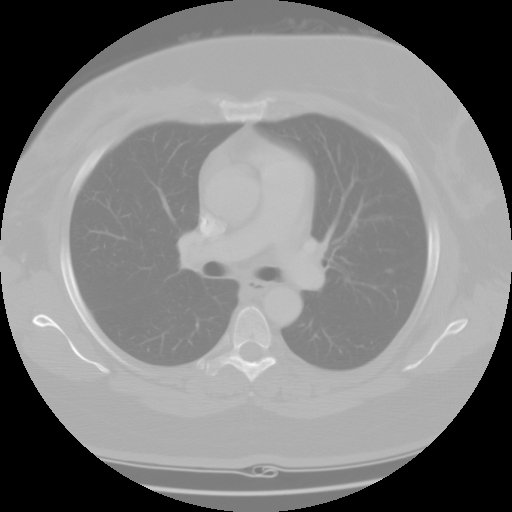

test01-composite.pngthe document as the editor composites it · 626 kBtest01.pngexported as PNG · 626 kBtest01.jpgexported as JPG · 93 kBtest01.webpexported as WEBP · 102 kBtest01-transparent.pngexported with the transparent-background box ticked · 611 kBtest01-opaque.pngexported with that box cleared — the hole filled in · 611 kBtest01-3d.pngextruded through the 3D renderer · 518 kBtest01-warp.pngbent with the arch warp · 698 kBtest01-carved.pngcontent-aware scaled to 80% width · 552 kBtest01.gifa two-frame animation, colour and greyscale · 546 kBtest01-pattern.pnga tile cut from the middle and laid back out · 25 kBtest01-preview.jpgthe preview sheet the print window shows · 82 kB
test02-composite.pngthe document as the editor composites it · 1064 kBtest02.pngexported as PNG · 1064 kBtest02.jpgexported as JPG · 131 kBtest02.webpexported as WEBP · 117 kBtest02-transparent.pngexported with the transparent-background box ticked · 1046 kBtest02-opaque.pngexported with that box cleared — the hole filled in · 1046 kBtest02-3d.pngextruded through the 3D renderer · 944 kBtest02-warp.pngbent with the arch warp · 1305 kBtest02-carved.pngcontent-aware scaled to 80% width · 988 kBtest02.gifa two-frame animation, colour and greyscale · 957 kBtest02-pattern.pnga tile cut from the middle and laid back out · 60 kBtest02-preview.jpgthe preview sheet the print window shows · 69 kB
test03-composite.pngthe document as the editor composites it · 380 kBtest03.pngexported as PNG · 380 kBtest03.jpgexported as JPG · 54 kBtest03.webpexported as WEBP · 63 kBtest03-transparent.pngexported with the transparent-background box ticked · 362 kBtest03-opaque.pngexported with that box cleared — the hole filled in · 361 kBtest03-3d.pngextruded through the 3D renderer · 285 kBtest03-warp.pngbent with the arch warp · 368 kBtest03-carved.pngcontent-aware scaled to 80% width · 312 kBtest03.gifa two-frame animation, colour and greyscale · 318 kB

test03-pattern.pnga tile cut from the middle and laid back out · 93 kBtest03-preview.jpgthe preview sheet the print window shows · 47 kB
test04-composite.pngthe document as the editor composites it · 1138 kBtest04.pngexported as PNG · 1138 kBtest04.jpgexported as JPG · 217 kBtest04.webpexported as WEBP · 178 kB

test04-transparent.pngexported with the transparent-background box ticked · 1098 kBtest04-opaque.pngexported with that box cleared — the hole filled in · 1098 kBtest04-3d.pngextruded through the 3D renderer · 856 kB

test04-warp.pngbent with the arch warp · 1003 kBtest04-carved.pngcontent-aware scaled to 80% width · 1016 kBtest04.gifa two-frame animation, colour and greyscale · 1177 kBtest04-pattern.pnga tile cut from the middle and laid back out · 94 kBtest04-preview.jpgthe preview sheet the print window shows · 85 kB
test05-composite.pngthe document as the editor composites it · 119 kBtest05.pngexported as PNG · 119 kBtest05.jpgexported as JPG · 34 kB

test05.webpexported as WEBP · 15 kB

test05-transparent.pngexported with the transparent-background box ticked · 117 kB

test05-opaque.pngexported with that box cleared — the hole filled in · 117 kB

test05-3d.pngextruded through the 3D renderer · 92 kB

test05-warp.pngbent with the arch warp · 160 kB

test05-carved.pngcontent-aware scaled to 80% width · 106 kBtest05.gifa two-frame animation, colour and greyscale · 200 kBtest05-pattern.pnga tile cut from the middle and laid back out · 2 kB

test05-preview.jpgthe preview sheet the print window shows · 24 kB